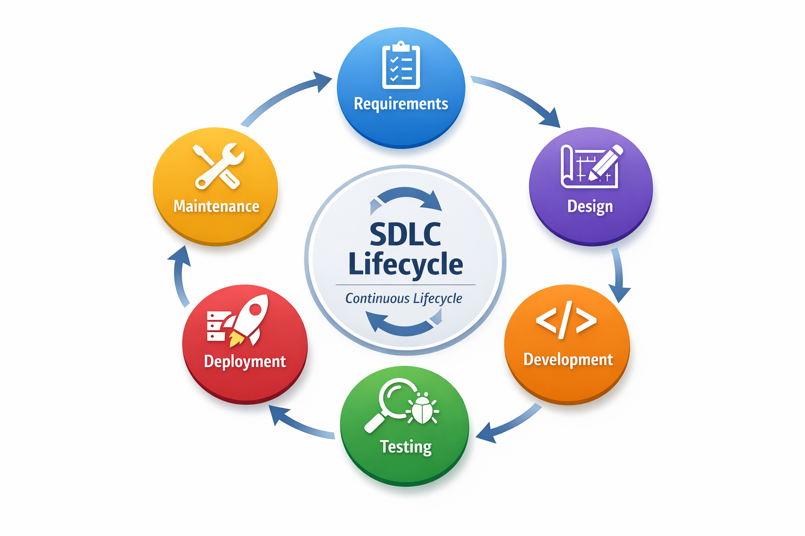

📖 Detailed Explanation
The Software Development Lifecycle (SDLC) is a structured process used by software development teams to design, develop, test, deploy, and maintain software applications. It provides a systematic approach to building high-quality software that meets customer requirements while minimizing costs and development time.
SDLC consists of several key phases that form a continuous cycle. These phases include requirement gathering, design, development, testing, deployment, and maintenance. The methodology chosen to implement these phases determines how efficiently teams can deliver software to end users.
🔑 Key Concepts
- Requirements Phase: Gathering and documenting what the software should do based on stakeholder needs
- Design Phase: Creating architecture and technical specifications for the software solution
- Development Phase: Writing code to implement the designed solution
- Testing Phase: Validating that the software works as intended and is free of defects
- Deployment Phase: Releasing the software to production for end-user access
- Maintenance Phase: Monitoring, updating, and fixing issues in the live environment
- Lifecycle Nature: The process is continuous, with feedback loops informing future iterations
📊 Visual Architecture

Figure 1: Software Development Lifecycle Phases
✅ Best Practices
| Practice | Why It Matters | How to Implement |
|---|---|---|
| Clear Requirement Documentation | Prevents misunderstandings and scope creep during development | Use tools like Jira to create detailed user stories and acceptance criteria |
| Continuous Stakeholder Communication | Ensures alignment between development team and business needs | Schedule regular sprint reviews and stakeholder demos |
| Version Control Everything | Maintains history of changes and enables collaboration | Use Git/GitHub for code, configuration, and infrastructure definitions |
| Automated Testing at Every Phase | Catches bugs early when they're cheaper to fix | Implement unit tests, integration tests, and automated regression testing |
| Choose Methodology Based on Project Needs | Different projects require different approaches | Use Waterfall for fixed requirements, Agile for evolving products |